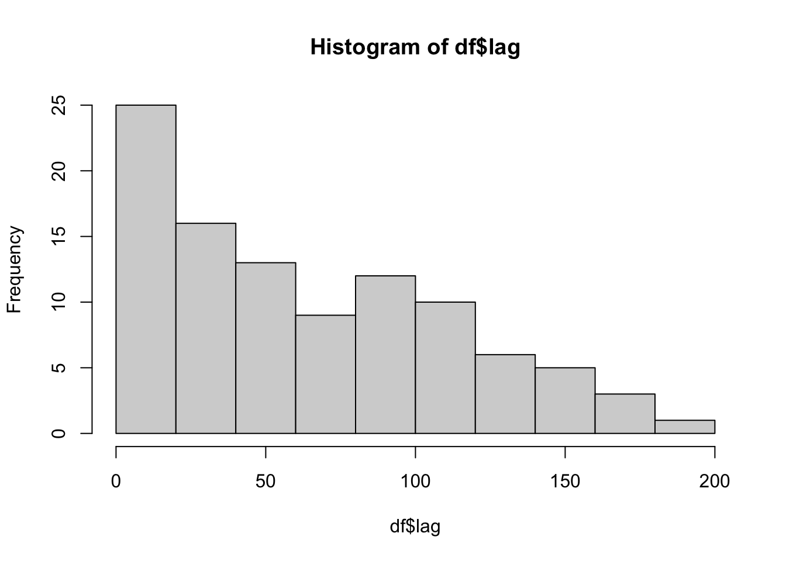

all_pictures <- 1:100Week 9: Orientation effects and algorithms for a continuous recognition procedure
Psyc 2001
Pictures
Recognition Memory
Additional literature review and solving a small puzzle
As a quick recap. In our meeting yesterday we tried a pilot version of a continuous recognition memory procedure for pictures with different levels of noise added.
I am still in the process of addressing some of the design issues in that experiment that we discussed, and I expect to be finished with that by early next week. Once I have a finalized version I will email you all a link to try the study one more time, and we will look at the data next week.
In addition, the assignment for this week is for you to do a little bit of research yourself, this time on rotation and orientation effects.
Many studies have shown that inverted or rotated stimuli may impair memory. Your first task is to read the very short paper (which is attached and in the zotero group library):
Scapinello, K. F., & Yarmey, A. D. (1970). The role of familiarity and orientation in immediate and delayed recognition of pictorial stimuli. Psychonomic Science, 21(6), 329–330.
Then use google scholar, or some other method (e.g., the references from the above paper), to find another paper investigating how rotation or inversion may impact recognition memory.
Make a blog post taking notes about the paper, and describing the extra paper that you found. After we finish the pictures in noise experiment, we’ll move on to making an experiment that attempts to replicate rotation effects.
Advanced
This section is not required, but may be of some interest (e.g., you could decide to work on this problem this week instead of the above). In a continuous recognition procedure items are presented one at time and a participants judges whether the item is new or old. A new item is one that has never been presented before. An old item is a repetition of a previously presented item.
The experiment that we tried in class was an example of a continuous recognition procedure. One of the issues with this design is controlling the mixture of new and old items in the sequence of trials. In our pilot experiment, there was a noticeable bias in our sequence. Specifically, most of the early trials were new items and most of later trials were old items.
The advanced problem is to consider our approach to the sequencing of new and old items. Ideally, we should be able to control:
- The proportion of new and old items (e.g. 50% each).
- The lag between repetitions. That is how many other items are between first and second presentations.
- Avoiding long runs of all new or all old
Here is an example approach that solves some of the problem, but not all of them.
Let’s say we have 100 pictures, represented here by the numbers 1 to 100
I will use R to duplicate the set of numbers, and then randomly shuffle the order. This process ensures that each item (1 to 100) is presented twice in a random order. As a result, there would be 100 new trials (the first time you see a particular number), and 100 old trials (the second time you a particular number).
trial_sequence <- sample(c(1:100,1:100))However, simply shuffling the values randomly produces some other issues. The code chunk below analyzes the above 200 trial sequence to determine whether a particular trial is a new or old item. If the item is old, the lag between presentations is also computed.
df <- data.frame()
for(i in 1:200){
num_positions <- which(trial_sequence %in% trial_sequence[i])
if(i == num_positions[1]) {
type <- "new"
lag <- NA
}
if(i == num_positions[2]) {
type <- "old"
lag <- num_positions[2] - num_positions[1]
}
t_df <- data.frame(trial = i,
item = trial_sequence[i],
type = type,
lag = lag
)
df <- rbind(df,t_df)
}This results in a data frame codes properties of the trial sequence. Notice that most of the beginning trials are new items, and most of the ending trials are old items.
knitr::kable(df)| trial | item | type | lag |
|---|---|---|---|
| 1 | 67 | new | NA |
| 2 | 7 | new | NA |
| 3 | 88 | new | NA |
| 4 | 74 | new | NA |
| 5 | 61 | new | NA |
| 6 | 66 | new | NA |
| 7 | 29 | new | NA |
| 8 | 49 | new | NA |
| 9 | 53 | new | NA |
| 10 | 63 | new | NA |
| 11 | 80 | new | NA |
| 12 | 73 | new | NA |
| 13 | 97 | new | NA |
| 14 | 85 | new | NA |
| 15 | 28 | new | NA |
| 16 | 68 | new | NA |
| 17 | 97 | old | 4 |
| 18 | 47 | new | NA |
| 19 | 40 | new | NA |
| 20 | 36 | new | NA |
| 21 | 80 | old | 10 |
| 22 | 28 | old | 7 |
| 23 | 88 | old | 20 |
| 24 | 20 | new | NA |
| 25 | 99 | new | NA |
| 26 | 84 | new | NA |
| 27 | 64 | new | NA |
| 28 | 54 | new | NA |
| 29 | 13 | new | NA |
| 30 | 54 | old | 2 |
| 31 | 25 | new | NA |
| 32 | 38 | new | NA |
| 33 | 24 | new | NA |
| 34 | 71 | new | NA |
| 35 | 90 | new | NA |
| 36 | 96 | new | NA |
| 37 | 26 | new | NA |
| 38 | 12 | new | NA |
| 39 | 93 | new | NA |
| 40 | 37 | new | NA |
| 41 | 34 | new | NA |
| 42 | 41 | new | NA |
| 43 | 71 | old | 9 |
| 44 | 13 | old | 15 |
| 45 | 32 | new | NA |
| 46 | 70 | new | NA |
| 47 | 31 | new | NA |
| 48 | 2 | new | NA |
| 49 | 99 | old | 24 |
| 50 | 51 | new | NA |
| 51 | 55 | new | NA |
| 52 | 44 | new | NA |
| 53 | 30 | new | NA |
| 54 | 17 | new | NA |
| 55 | 22 | new | NA |
| 56 | 4 | new | NA |
| 57 | 83 | new | NA |
| 58 | 6 | new | NA |
| 59 | 68 | old | 43 |
| 60 | 98 | new | NA |
| 61 | 44 | old | 9 |
| 62 | 86 | new | NA |
| 63 | 73 | old | 51 |
| 64 | 72 | new | NA |
| 65 | 95 | new | NA |
| 66 | 25 | old | 35 |
| 67 | 90 | old | 32 |
| 68 | 1 | new | NA |
| 69 | 14 | new | NA |
| 70 | 78 | new | NA |
| 71 | 76 | new | NA |
| 72 | 27 | new | NA |
| 73 | 18 | new | NA |
| 74 | 70 | old | 28 |
| 75 | 94 | new | NA |
| 76 | 22 | old | 21 |
| 77 | 16 | new | NA |
| 78 | 6 | old | 20 |
| 79 | 64 | old | 52 |
| 80 | 69 | new | NA |
| 81 | 19 | new | NA |
| 82 | 18 | old | 9 |
| 83 | 38 | old | 51 |
| 84 | 9 | new | NA |
| 85 | 91 | new | NA |
| 86 | 47 | old | 68 |
| 87 | 48 | new | NA |
| 88 | 3 | new | NA |
| 89 | 3 | old | 1 |
| 90 | 63 | old | 80 |
| 91 | 59 | new | NA |
| 92 | 84 | old | 66 |
| 93 | 23 | new | NA |
| 94 | 23 | old | 1 |
| 95 | 42 | new | NA |
| 96 | 89 | new | NA |
| 97 | 92 | new | NA |
| 98 | 91 | old | 13 |
| 99 | 32 | old | 54 |
| 100 | 21 | new | NA |
| 101 | 35 | new | NA |
| 102 | 11 | new | NA |
| 103 | 41 | old | 61 |
| 104 | 62 | new | NA |
| 105 | 72 | old | 41 |
| 106 | 10 | new | NA |
| 107 | 100 | new | NA |
| 108 | 92 | old | 11 |
| 109 | 14 | old | 40 |
| 110 | 39 | new | NA |
| 111 | 7 | old | 109 |
| 112 | 78 | old | 42 |
| 113 | 100 | old | 6 |
| 114 | 45 | new | NA |
| 115 | 43 | new | NA |
| 116 | 36 | old | 96 |
| 117 | 82 | new | NA |
| 118 | 46 | new | NA |
| 119 | 60 | new | NA |
| 120 | 29 | old | 113 |
| 121 | 30 | old | 68 |
| 122 | 19 | old | 41 |
| 123 | 46 | old | 5 |
| 124 | 87 | new | NA |
| 125 | 89 | old | 29 |
| 126 | 77 | new | NA |
| 127 | 83 | old | 70 |
| 128 | 42 | old | 33 |
| 129 | 61 | old | 124 |
| 130 | 57 | new | NA |
| 131 | 15 | new | NA |
| 132 | 45 | old | 18 |
| 133 | 31 | old | 86 |
| 134 | 12 | old | 96 |
| 135 | 62 | old | 31 |
| 136 | 2 | old | 88 |
| 137 | 56 | new | NA |
| 138 | 93 | old | 99 |
| 139 | 1 | old | 71 |
| 140 | 15 | old | 9 |
| 141 | 85 | old | 127 |
| 142 | 35 | old | 41 |
| 143 | 43 | old | 28 |
| 144 | 75 | new | NA |
| 145 | 37 | old | 105 |
| 146 | 65 | new | NA |
| 147 | 53 | old | 138 |
| 148 | 5 | new | NA |
| 149 | 59 | old | 58 |
| 150 | 10 | old | 44 |
| 151 | 65 | old | 5 |
| 152 | 26 | old | 115 |
| 153 | 27 | old | 81 |
| 154 | 74 | old | 150 |
| 155 | 98 | old | 95 |
| 156 | 58 | new | NA |
| 157 | 34 | old | 116 |
| 158 | 11 | old | 56 |
| 159 | 60 | old | 40 |
| 160 | 55 | old | 109 |
| 161 | 79 | new | NA |
| 162 | 69 | old | 82 |
| 163 | 49 | old | 155 |
| 164 | 56 | old | 27 |
| 165 | 5 | old | 17 |
| 166 | 77 | old | 40 |
| 167 | 81 | new | NA |
| 168 | 48 | old | 81 |
| 169 | 17 | old | 115 |
| 170 | 52 | new | NA |
| 171 | 21 | old | 71 |
| 172 | 8 | new | NA |
| 173 | 87 | old | 49 |
| 174 | 33 | new | NA |
| 175 | 20 | old | 151 |
| 176 | 67 | old | 175 |
| 177 | 76 | old | 106 |
| 178 | 9 | old | 94 |
| 179 | 75 | old | 35 |
| 180 | 79 | old | 19 |
| 181 | 33 | old | 7 |
| 182 | 81 | old | 15 |
| 183 | 50 | new | NA |
| 184 | 86 | old | 122 |
| 185 | 52 | old | 15 |
| 186 | 24 | old | 153 |
| 187 | 94 | old | 112 |
| 188 | 4 | old | 132 |
| 189 | 16 | old | 112 |
| 190 | 66 | old | 184 |
| 191 | 58 | old | 35 |
| 192 | 57 | old | 62 |
| 193 | 51 | old | 143 |
| 194 | 95 | old | 129 |
| 195 | 39 | old | 85 |
| 196 | 40 | old | 177 |
| 197 | 50 | old | 14 |
| 198 | 82 | old | 81 |
| 199 | 8 | old | 27 |
| 200 | 96 | old | 164 |
We can also look at the distribution of lags for old items. The random shuffling produced a wide range of lags, including very short lags.
hist(df$lag)

Next steps
Ideally we want to create a different way of mixing items together that allows:
Reduction of bias toward new/old items across the sequence. The beginning shouldn’t be mostly new items, and the end shouldn’t be mostly old.
More control over the lags between first and second presentation of an item. For example, all items might have a minimum lag of 50 or greater.
I’ll be working on solutions to this problem, and feel free to try your own as your work for this week. The solution to this type of problem requires an algorithm for mixing the items, and then some analysis of the sequence to show that it expresses the desired properties.
One of the papers in our zotero group library used a continuous recognition procedure, and their method section describes an approach that involves “test” items, and “filler” items. Here’s the reference:
Isola, P., Xiao, J., Torralba, A., & Oliva, A. (2011). What makes an image memorable? Computer Vision and Pattern Recognition (CVPR), 2011 IEEE Conference On, 145–152.
Updates
Here’s what I came up with.
Verbal description of algorithm
This algorithm is designed to create a sequence of items with specific characteristics:
Choose a total of “n” items to be presented twice, for example, selecting 200 pictures for double presentation.
Define a minimum and maximum lag range, representing the number of items between the first and second presentation (e.g., a lag range of 50 to 100).
Calculate the total number of trials as the product of the number of pictures (n) times 2, and then add the maximum lag range (e.g., 200 * 2 + 100 = 500 trials).
Randomly distribute the first occurrences of the items within the first 400 trials (considering the maximum lag range) to avoid exceeding the trial limit.
Assign the remaining unassigned spots in the sequence to the second occurrences of each item. Iterate through the sequence, and for each first-occurrence item, find open positions within the specified lag range. Randomly choose one and fill it with the second occurrence of the current item. Repeat this process throughout the sequence.
Any remaining unassigned spots will be filled with “filler” items. The aim is to balance the beginning and end of the sequence to avoid bias toward new or old items. Here’s how it’s done:
- Filler items are introduced, which are additional items.
- A small window of filler items is selected (e.g., four filler items).
- The array of filler items is doubled, and the order is shuffled (e.g., 1,2,3,4,1,2,3,4 -> 1,3,2,2,4,3,1,4).
- Filler items are assigned to the missing values in the trial sequence based on these shuffled indices.
- This process is repeated across the entire sequence to incorporate new sets of filler items.
In summary, the algorithm is designed to generate a sequence of items, ensuring that first and second occurrences of items are appropriately spaced and filling any gaps with filler items to avoid bias of old vs new items at the beginning and end of the sequence.
R code version
# set total number of items that will be repeated
n_items <- 200
# set range of possible lags
lag_range <- c(50,100)
# calculate total_trials needed
total_trials <- (n_items*2)+lag_range[2]
# spread out the first occurrences of each item across the first 400 positions. This ensures a relatively uniform mixture of new items across the first 400 trials.
# initial_spread has 500 slots, 1s are randomly assigned to 200 positions within the first 400 slots. 0s are assigned everywhere else.
# 1s indicate that an item will receive its first presentation in that slot
initial_spread <- c(sample(c(rep(1,200),rep(0,200))),rep(0,100))
# create an empty vector to hold the trial sequence.
# The trial sequence will also have 500 slots, each slot will be filled with a integer representing a specific item (from 1 to 200, and greater than 200 for filler items)
sequence <- c()
# assign first occurrences of each of the 200 items to the locations that had 1s.
sequence[which(initial_spread == 1)] <- 1:200
# get available spots, these are spots with 0s
available <- which(initial_spread == 0)
# create a vector to hold items that have already been presented twice
old <- c()
# loop across each item in sequence
for(i in 1:length(sequence)){
# make sure item is an integer
if(is.na(sequence[i]) == FALSE){
# make sure item hasn't been presented twice already
if(sequence[i] %in% old == FALSE){
# whatever item this is will be presented twice, add it to old
old <- c(old,sequence[i])
# get possible open spots that are within the lag range
possible_spots <- available[available > i+lag_range[1] & available < i+lag_range[2]]
# error checking if there are no spots left
if(length(possible_spots) < 1) {
print(i)
break
}
# pick a random open spot
spot_choice <- sample(possible_spots)[1]
# assign the current item to the chosen spot
sequence[spot_choice] <- sequence[i]
# update the available spots
initial_spread[spot_choice] <- 1
available <- which(initial_spread == 0)
}
}
}
# At this point the sequence should be full of the values 1 to 200
# with each value occurring twice
# and with the lag between repetitions randomly assigned within the lag range
# all other values are NA, indicating no item has been assigned.
# These items need to be "filled" with non-critical items
# non-critical items will be extra items with much shorter lags
# they are included to balance the proportion of old/new items across the sequence
# add fillers to NA
# get the number of NAs in the sequence
num_NA <- length(sequence[is.na(sequence)])
# make the count even
if(num_NA %% 2 != 0) num_NA <- num_NA+1
# figure out how many sets will be needed
blocks <- ceiling(num_NA/8)
# randomly generate sets of item indices with short lags
# make sure there is enough to cover all NAs
new_order <- c(replicate(blocks,sample(c(1:4,1:4))))
new_vals <- rep(seq(200,200+((blocks-1)*4),4),each=8)
# Filler items are assigned values greater than 200
NA_sequence <- new_vals+new_order
# add filler items to the sequence
na_cnt <- 0
for(i in 1:length(sequence)){
if(is.na(sequence[i]) == TRUE){
na_cnt <- na_cnt + 1
sequence[i] <- NA_sequence[na_cnt]
}
}Print out example sequence
print(sequence) [1] 202 1 2 3 203 4 5 6 7 8 9 10 110 12 13 201 202 204
[19] 201 204 203 208 207 14 15 16 206 208 17 207 18 206 205 205 212 212
[37] 211 19 209 20 210 21 22 23 211 210 24 209 25 26 121 214 28 29
[55] 214 216 1 30 215 31 32 216 215 33 34 213 35 36 37 38 13 213
[73] 39 220 40 41 42 4 11 43 125 219 6 2 218 12 45 46 47 9
[91] 8 48 49 50 3 217 51 219 220 5 19 52 20 218 18 7 27 217
[109] 223 10 53 28 221 54 222 224 17 55 21 25 23 15 14 16 56 57
[127] 58 24 59 60 61 38 62 63 64 65 66 26 67 68 22 37 69 29
[145] 70 71 34 47 32 72 30 73 31 39 33 74 75 50 51 76 77 40
[163] 78 134 45 35 79 80 41 81 82 42 83 44 43 84 52 85 48 86
[181] 46 87 88 89 90 56 57 223 91 92 49 66 93 94 95 55 60 96
[199] 58 97 98 71 99 53 62 100 54 224 101 59 102 103 65 104 69 105
[217] 106 107 108 109 67 110 111 61 112 113 114 115 116 63 64 117 118 119
[235] 68 70 75 120 121 122 123 124 125 76 91 126 72 79 78 74 73 127
[253] 96 128 129 130 131 77 132 133 134 135 81 82 80 136 84 83 87 94
[271] 137 86 100 90 85 138 139 140 133 141 142 98 89 95 92 109 143 93
[289] 144 145 124 146 147 148 149 150 151 97 152 153 101 103 154 155 156 157
[307] 158 159 160 102 161 104 106 162 105 107 163 108 114 164 165 111 113 112
[325] 116 166 115 120 119 117 118 167 168 169 122 170 171 172 123 136 173 174
[343] 175 176 126 130 177 129 127 178 179 128 180 181 132 131 182 183 184 185
[361] 135 186 140 146 187 145 188 138 189 137 190 191 139 147 152 192 141 193
[379] 150 142 144 194 151 143 155 195 148 149 196 222 197 156 153 159 168 198
[397] 199 200 165 221 163 154 160 170 157 158 162 161 183 227 225 228 226 173
[415] 181 172 164 167 171 186 225 189 169 227 166 226 176 228 178 232 229 180
[433] 232 230 177 229 231 231 184 194 174 175 230 187 188 179 197 235 233 234
[451] 182 235 234 233 236 236 240 190 185 238 237 239 191 237 240 196 200 192
[469] 238 239 243 242 243 244 241 193 242 195 244 241 248 246 246 247 245 247
[487] 245 198 248 251 199To Do
Come back and do some analyses of the sequence to show it has the properties we intend it to have. Note also, this algorithm would need to be implemented in javascript for our experiment (already done).